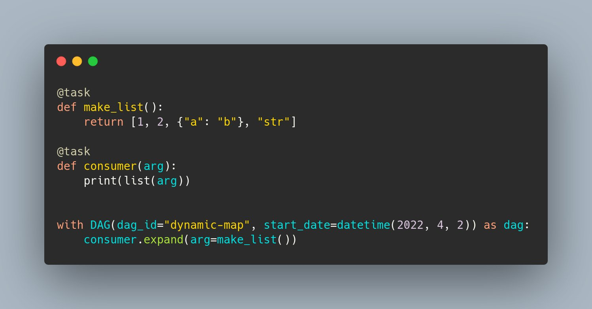
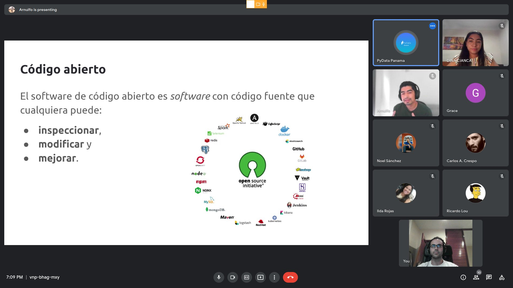
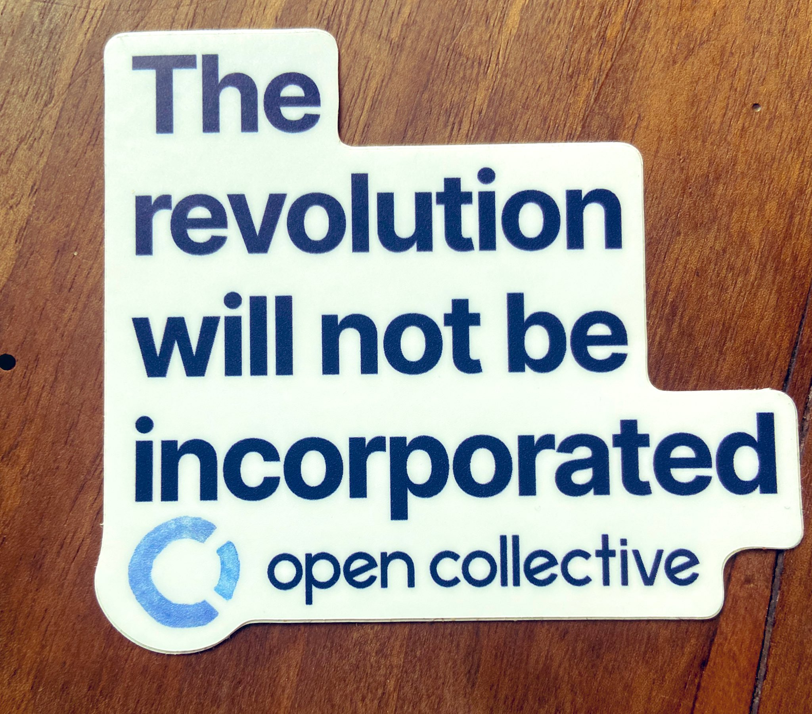
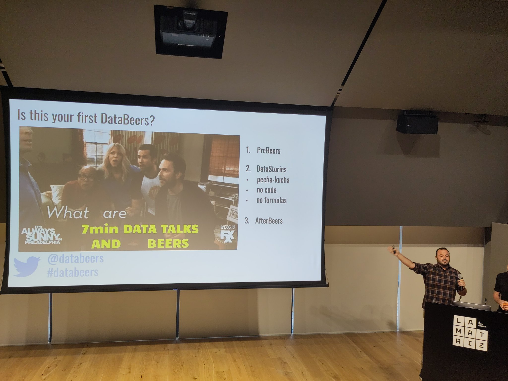
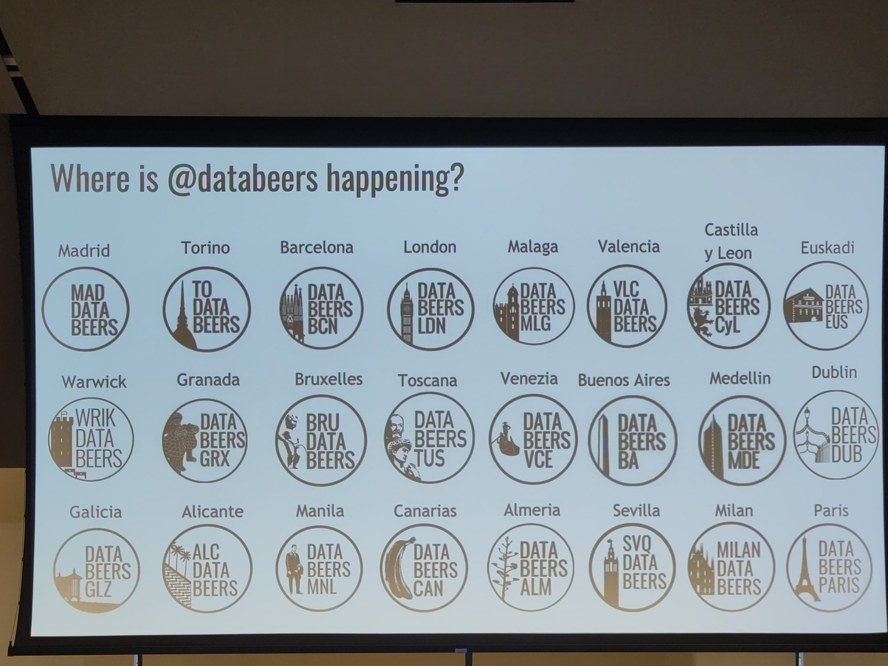
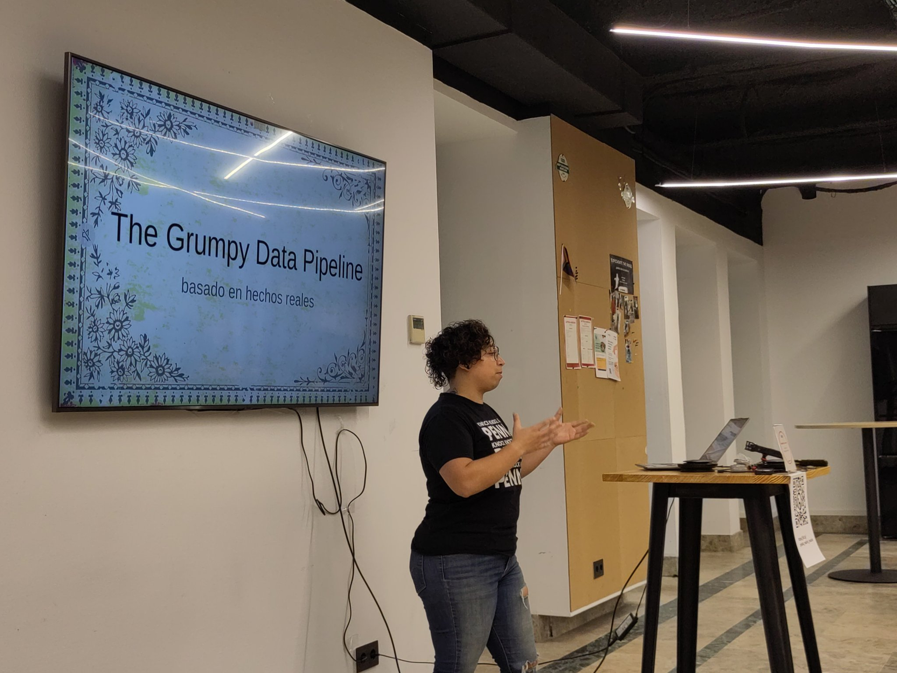
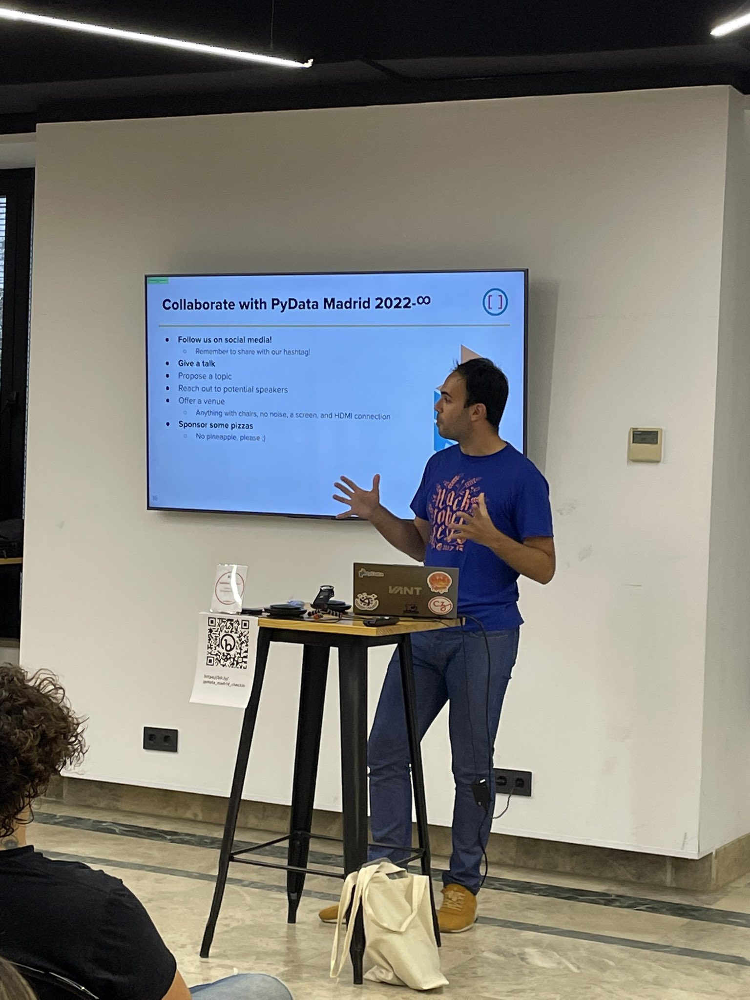
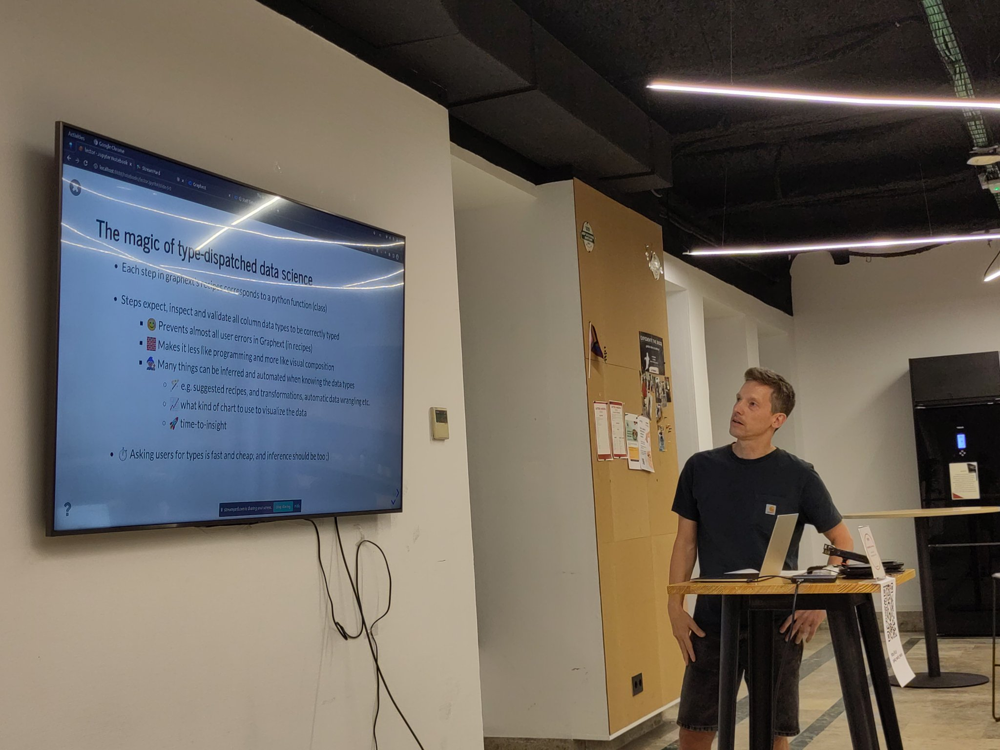
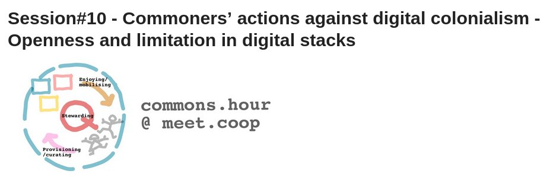

The new release @ApacheAirflow, 2.3, ships a cool feature: dynamic task mapping!
This means that now the number of tasks in a DAG can change at run time based on the state of the previous tasks.
Full proposal (AIP-42) is here: https://cwiki.apache.org/confluence/pages/viewpage.action?pageId=191336946
#ApacheAirflow

RT @pradyunsg: OK folks, I see a lot of complaints about Python Packaging stuff around the Internet.
Here's your moment. :)
RT @orchestofficial: pipelines
RT @R_Hisp: En su Noticiero de Python Científico, @juanluisback dice que si alguien piensa que R está muerto, no tiene ni idea.
Si quiere…
Replying to @jitsinews
Maybe it's time to #DropCloudflare cc @marcan42 @lizthegrey
Replying to @python_es and @Jimena_y_yo
Queremos saber el horóscopo de @dukebody! 😛
Fui a mirar el pronóstico para Virgo en @elmundotoday y... me han pillado 😂
RT @PyDataPanama: Más allá de Pandas: comparativa de dataframes en Python
Por: Juan Cano @juanluisback
Te esperamos este martes 06 de se…
RT @tiangolo: Be nice to your open source maintainers. 🙇
You don't know how much work it takes.
@ChristianHeimes and @gpshead just finish…
Replying to @javiteacher and @estudiarfisica
Interesante lo de las redacciones a mano como último recurso para ejercicios fuera de clase. Aunque imagino que encontraría muchas resistencias...
¿Es hora de implantar flipped classroom en serio? Y por otro lado, ¿qué hacer con ratios altas? Yo tengo 55+ alumnos en clase...
Replying to @javiteacher and @estudiarfisica
Efectivamente, no tengo desdoblamientos. Gracias por los consejos!
Si la memoria no me falla, el primer año que ofrecimos ludoteca para la @PyConES la usaron 0 personas, y el segundo año 1. Este año se baten todos los records y habrá 20 peques.
Si nunca empiezas a ofrecer el servicio, ¿cómo van a planificar las familias ir a tu evento? https://twitter.com/PyConES/status/1566110987350163456
RT @laysauchoa: Python events in September that you can't miss 🔥🐍
▫ @pyconsk 09 – 11, Bratislava, SK
▫ @py_bay 10, San Francisco, USA
▫ @P…
Replying to @lamechthinkbig, @RTFMCelia, @_nustfci, @A__Diack, @bonjora, @MakhamisaS and @DeepIndaba
cc @PyConNA
Replying to @_Lucid1ty and @cfenollosa
Didn't know about @Posteo_en, looks like a fine alternative to ProtonMail and Tutanota. Thanks for sharing!
Replying to @cfenollosa
Thanks for sharing your take on this. Reached out to @heyhey about the implications for users of custom domains on their platform (currently "Forwarding in and sending out via SMTP"). Maybe I'll have to make my fancy custom domain just a redirection...
¡Mañana a las 19:00 hora española (17:00 UTC) os espero en la primera reunión de @PyDataPanama! Muchas gracias @arnuIfo_07 por la invitación 🙌🏼
#python #pandas #polars #dataframes
https://twitter.com/PyDataPanama/status/1566103752431620096
RT @davidthewid: In short, Stable Diffusion's License won't stop all harmful use, but it might:
1) help change norms to make it ok to care…
Replying to @choldgraf, @luis_in_brief and @simonw
Have a look at https://twitter.com/davidthewid/status/1566838601975042049
Replying to @read_the_code
In which I discovered a very useful, but sadly abandoned, Python library for time series anomaly detection 👀 https://twitter.com/orchestofficial/status/1567061025773568001
Replying to @Quant_Girl and @matplotlib
I love your @matplotlib settings/stylesheet 😍 would you be willing to share it? Amazing plot!
Replying to @OSSInsight, @rustlang, @golang, @typescript, @nodejs, @ziglang, @PowerShell_Team, @v_language, @SwiftLang, @kotlin and @JuliaLanguage
Why there's micropython but no cpython?
¡Arrancando @PyDataPanama!

RT @pyOpenSci: Hey y'all! @leahawasser here tweeting for pyopensci! i'm on day 3 and working on a plan for our next steps. I'm right now…
RT @PyDataMadrid: Ya está abierto el registro para nuestra reunión de septiembre: 🔥 Acelerando flujos de datos y modelos de aprendizaje
ht…
RT @orchestofficial: 📢 Join us live on September 21 for our Community Event! 📢
Learn more about the latest improvements we have made to Or…
RT @piamancini: It won’t.

Replying to @defis_eu, @ComisionEuropea, @EU_ENV, @UNBiodiversity, @FBiodiversidad, @eu_echo, @UNEP, @eforestal, @proteccioncivil, @IGNSpain and @mitecogob
Due to drought _and_ overexploitation of aquifers. Did you forget accidentally or un purpose?
Replying to @yetudada
Not very meritocratic, I heard there's a nepotism issue 😝
RT @PyDataMadrid: Recuerda: ¡la semana que viene tenemos cita!
Replying to @remoquete
Human beings exhale CO2, the gas of hypocrites https://thenib.com/mister-gotcha-vs-the-green-new-deal/
RT @gitlost: js fuckery
Any Python projects participating in @hacktoberfest? 👀
Replying to @DanWos and @hacktoberfest
Awesome 😍 will keep those in mind!
RT @marlene_zw: I’m on the council for this years #hactoberfest so if any #Python projects are thinking about participating and want to cha…
Superb blog post 😍 love to see how @readthedocs is becoming data-driven. Keep rocking! https://twitter.com/readthedocs/status/1569759065953423362
RT @reydelhumo: I'm super happy with the content of this blog post, the research I've done behind it and the things I had to learn. Lot of…
Replying to @juanluisback
Completed the migration of MySTyc to PyScript, see it in action! https://astrojuanlu.github.io/mystyc/ ✨
Replying to @CristianBilba12
Yo propongo que el PSOE de Madrid no concurra a las elecciones, se quede 4 años de barbecho en el rincón de pensar, y deje paso a otras formaciones que tengan una mínima ambición de ganarlas.
It's coming! 😍 https://twitter.com/orchestofficial/status/1569989611874840576
Replying to @granamaa
¡Estoy en Orchest ahora! Satellogic fue mi único amor verdadero, ahora voy de flor en flor 😂
Replying to @granamaa
Fácil no lo sé, pero claramente más aburrida 😋
Estoy en el primer @databeers después de la pandemia y me está haciendo una ilusión enorme coincidir con tanta gente que hacía años que no veía 😍😍😍 ¡ya solo por eso ha merecido la pena!
Replying to @juanluisback
Arranca #databeers!


RT @VMLYRSpain: Estamos muy contentos de ser los anfitriones de @databeers en 📍 La Matriz (VMLY&R Madrid). Nos acompañará @latule (Datadist…
Replying to @juanluisback
Bueno, quería tuitear sobre la charla de @datadista en #databeers pero ESTABA CON LOS OJOS COMO PLATOS. Me acabo de hacer socio y tú también puedes https://www.datadista.com/
Replying to @datadista
¡Eventazo! Ahora a por las cervezas @databeers
RT @ecosia: Planet 👏 over 👏 profit 👏 Welcome to the club @patagonia!
We're so excited to see more founders give up profit for the planet,…
RT @opensrcdesign: Just in case you are looking for a #figma alternative, @penpotapp is an excellent tool and it is open source.
Replying to @dailystoic
Wow, been following this account for some time, but somehow this resonated with me a lot today.
Replying to @victorianoi
Everybody wants to hire tech recruiters - nobody wants to train tech recruiters to be more effective in their search and stop confusing Java and JavaScript 😉
(which, in case I wasn't clear, it's *not* their fault)
Determined to become a @DataPolars power user, already changing my muscle memory to do `import polars as pl; http://pl.read_csv("...")` 😎
Today it's @pydatanyc proposal status day 😬
RT @PyDataMadrid: Estamos explorando ideas para un logo, y @urbanplans nos ha regalado esta colorida y un tanto pantagruélica propuesta, in…
RT @zwelitunyiswa: @juanluisback @DataPolars Worth the change, mate. Was doing a temporal groupby on 24million rows and polars was 6x faste…
Replying to @remilouf
Why do you say so? Hasn't this been a problem since basically forever? (SciPy, SWIG, etc)
RT @pwang: An example of how stupidity metastasizes: That stupid paper benchmarking "carbon footprint" of different languages has been maki…
Replying to @vrruiz, @migueldeicaza and @pwang
Víctor no mezcles churras con merinas https://mobile.twitter.com/jbzfn/status/1571508716154851337
RT @DataNerdery: One of the most useful things from the RSE unconference for me was this diagram breaking down the different aspects of wha…
Replying to @tmcw
"I’ve learned some bad habits from Hacker News."
It's your fault for *reading* HN in the first place :)
The Rust + Python marriage has been getting better and better, but somehow I found this blog post so inspiring, it reads like an inflection point in the Python ecosystem. Worth giving ruff a try by the way. https://twitter.com/charliermarsh/status/1564674605469548544
Replying to @concreted0g, @FreeCADNews, @Raspberry_Pi, @HackSpaceMag and @yorikvanhavre
Congrats boss! 🙌🙌🙌🙌
Replying to @juanluisback
Related: https://twitter.com/juanluisback/status/1455270677213294593
Replying to @remilouf
Also tbh I engaged with this tweet because of the SnK reference 😇
RT @lapajaraenbici: Este fin de semana hemos estado en #Nantes participando y organizando el Meeting Internacional de @coopcycle. Tres días…
Replying to @deborahciencia and @lasexta_tv
¿El aumento de eficiencia de los paneles solares del 30 % al 40 % "demuestra" que se puede crecer de manera infinita con recursos finitos?
Retracte o corrija este artículo antes de que alguien se lo tome en serio.
Replying to @RiddleMeCam
We are nervous 😬 https://twitter.com/juanluisback/status/1570726626803195906
Confeccionando mi agenda para la @PyConES y las charlas tienen una pinta alucinante, en varias ocasiones me gustaría estar en 2 o 3 a la vez 😳 ¡Ya falta poco! https://2022.es.pycon.org/schedule.html
Replying to @iamckuehl
Yes!! I see myself using this very soon, thanks for sharing!
Replying to @yuvipanda and @melissawm
Parts of this are useful for most beginners 😅
(1) Mi favorito es @pandas_dev, aunque le estoy haciendo ojitos a @DataPolars
(2) Claramente me tomaría un café con @wesmckinn
#PyConES22 😁 https://twitter.com/PyDataMadrid/status/1572151039217778690
I'll be presenting "Expressive and fast dataframes in Python with @DataPolars" and showcasing @orchestofficial at #PyDataNYC22!
See you all in November 😍 cc @pydatanyc @pydata
Replying to @story645 and @scientific_py
✋🏼✋🏼✋🏼✋🏼
Replying to @RitchieVink and @DataPolars
Feels surreal to be the first on this, Polars is such a great tool and I think it's going to grow like crazy in the near future! Thanks for stewarding this project 🙌🏼
Replying to @benjy and @pantsbuild
I'll definitely give this a watch, thanks for sharing!
Some colleagues have raised concerns about "the two language problem", which the article I quoted touches as well. Rust generates excitement but I have heard that it has a steep learning curve. What are your thoughts?
Replying to @javisantana and @iggy_knights
Ah que no habéis muteado a este hombre todavía 😂
RT @orchestofficial: 🚨 TODAY is the big day! Tune in at 15:00 UTC (17:00 CEST) to learn more about the new Orchest UI and performance impro…
Replying to @stylewarning and @pwang
Apart from the other mistakes in your napkin math that people have pointed out to you, you seem to grossly overestimate what 1 person can do in 100 hours scattered over a year, or those same hours concentrated in 2 weeks. Which is how communities of volunteers work.
Replying to @stylewarning, @WillingCarol, @pwang, @teoliphant, @NumFOCUS, @dontusethiscode, @brettsky and @gvanrossum
We all understand what "billions" means, and several people told you that you're wrong or misguided. If you can't understand how the word "billions" triggered so many passionate reactions from folks that know better than you, then I don't think you understand how Twitter works.
Replying to @Phipz, @AmandineLePape, @matrixdotorg and @element_hq
Is there a guide on "how to set up a WhatsApp bridge on @element_hq for dummies"? I would gladly pay for having this bridged to Telegram, Matrix, others
Replying to @benjaoming and @davidgerard
"bitcoin has literally always been barely functional – like a battery that uses a potato, and their idea of scaling it up is to add more potatoes."
My hero
RT @PyDataMadrid: Hoy vamos a desvelar nuestro nuevo logo 🥁 Solo podemos decir que tiene un elemento muy prominente del folklore madrileño.…
I'm a simple man: you retweet cryptobro shit, I unfollow.
Replying to @nicholdav
I rarely block, since the birdsite _tells_ the other person they're blocked and they use this to brag. On LinkedIn however, I block like there's no tomorrow
RT @pyOpenSci: Hi all! We are hard at work updating our contributing guide and website. Hopefully the new website changes makes it easier t…
Replying to @nicholdav
Arranca #PyDataMadrid con la sala llena y @valerybriz en escena: "the grumpy data pipeline"

RT @FerPerrotta1: Primer PyData en Madrid #PyDataMadrid

Replying to @valerybriz
Y sigue la gente de @graphext en #PyDataMadrid con "The magic of type-dispatched data science"

Replying to @valerybriz
♥️♥️♥️
Episodio 48 🐍⚙️ on Noticiero Python Científico https://astrojuanlu.substack.com/p/episodio-48?utm_source=twitter&utm_campaign=auto_share&s=w
RT @reydelhumo: @readthedocs + @writethedocs: Re-Write the Docs
Replying to @HEPfeickert
That sounds crazy but "if it works, don't touch it" 😅
This edition of @data_weekly is full of gold! https://twitter.com/data_weekly/status/1574208284097236993
Replying to @TerraMeijar
Damn, why people fail so hard at trying to sound smart? Too much animosity.
Proud of ZimSat-1, I wish them the best luck 💪🏼 Do you know if they will broadcast the telemetry through amateur radio frequencies, so it can be collected by @SatNOGS and other operators?
Replying to @spbail
Depending on use case I'd say. I'm using Figma a lot, but it's not for everything (or Penpot, its F/OSS contender). For digital paint, Krita is nice.
Inkscape has gotten much better, and so has GNU I.M.P, but don't expect a radically fresh new UI/UX if you've used them already.
Replying to @aicoding_
Replying to @TerraMeijar and @SatNOGS
Apparently it has a handful of instruments, cool! http://www.amsatuk.me.uk/iaru/formal_detail.php?serialnum=792
RT @ScipyLA: Desde hoy disfrutarás nuevamente de #ScipyLatam2022 junto a nuestros expertos que compartirán su conocimiento y experiencias s…
Replying to @rhpMike, @killerstorm and @Carnage4Life
Slack is not worth hundreds of thousands of dollars: good take
Slack is ~basically IRC: bad take
UX matters
Sad, but true. https://twitter.com/levelsio/status/1572973761300774915
Replying to @juanluisback
Also, I'm tired of folks saying "*just* use IRC". The UX of IRC is objectively crap and I'm glad we have many alternatives nowadays.
https://twitter.com/yuvipanda/status/818348993474363392
Replying to @remilouf and @blackjax_mcmc
What do you store in git? Only the text representation, or both text + ipynb? I found that doing (1) loses cell outputs and doing (2) carries all the problems of ipynb to jupytext + synchronization.
Replying to @yosobreip, @ScipyLA and @RTFMCelia
👏🏼👏🏼👏🏼 ¡Feliz #SciPyLA!
Replying to @pyconcolombia
Con suficientes recursos, siempre es mejor poder hacer un evento híbrido que incluya a personas que no quieren o no pueden asistir a eventos presenciales. Pero hacer eventos híbridos es difícil.
Replying to @pyconcolombia
¡Gracias a vosotros! Y si es presencial y cuadran las fechas, 100 % estaré allí :)
Excellent conversation with @ntnsndr in the context of commons.hour session hosted by @MeetdotCoop: "Commoners’ actions against digital colonialism - Openness and limitation in digital stacks"
Totally worth checking the session notes https://forum.meet.coop/t/signup-commons-hour-session-10/1156/2?u=astrojuanlu

Replying to @juanluisback
Three ideas that stood out for me:
1⃣ Legal enforcement is not the end - "signaling" works and is meaningful too (see quoted tweet)
2⃣ Licenses and code can be a distraction - digital stacks comprise much more
https://twitter.com/davidthewid/status/1566838601975042049
Replying to @juanluisback
And I add: what many people cherish about open source is actually the "open development", hence the cooperative aspects of software production, which reminds me of https://cooperativetechnology.codeberg.page/
Replying to @juanluisback
Also, like @ntnsndr, I'm also "impatient" 🙂 to see the cooperative way of doing and thinking expand much more broadly to other spaces, and maybe we don't need to wait for every company to become a coop to spread the word.
RT @pythoncanarias: Spread the love for open source with #Hacktoberfest, a month-long celebration of open-source projects, their maintainer…
RT @colinraffel:
Replying to @ReaderMeter
It's difficult to be more elegant than @yuvipanda
I registered for #Hacktoberfest 2022! Check out my @holopin_ badge 😎 https://holopin.io/userbadge/cl8jtitcr1472109jrht0287r1

RT @condaproject: 🚀 We're elated to announce the release of #conda 22.9.0, the first version following CEP 8 (Conda Enhancement Proposal) i…
RT @orchestofficial: We are preparing a big surprise for tomorrow 👀 Stay tuned!
RT @jaime_rgp: Are you familiar with all the different syntaxes YAML offers for strings?
I was making some changes today to some CI confi…
This article is very insightful, and touches on one thing that I believe underpins the success of @penpotapp:
Penpot is not *just* a F/LOSS alternative to Figma. It has its own ideas, its own identity, and chose a meaningful and specific problem to solve.
We need more of this. https://twitter.com/TechCrunch/status/1574754640490536963
Replying to @juanluisback
Well, and @kaleidosnet is chock full of talent, has good taste, and cares about UX. That's the other factor 😉
RT @orchestofficial: Today is the day! We are excited to announce that we are launching our UI redesign, Orchest 2.0, on @ProductHunt 🎉 If…
Replying to @ryanleesipes
A calendar (@heyhey)
RT @LinaAsahi: ✨🎊🎉IT WORKS!!!!🎉🎊✨
🦀🐧🍎🔻🧊🇼👩🔥🦊⚙️
GNOME runs!! Firefox works!! You can watch YouTube, play Neverball, run KDE apps, and more!!…
RT @PyCampES: ¡Ya tenemos fecha y venue para el PyCamp del 2023! ¿Te lo vas a perder?
Mira todos los detalles en nuestra web https://t.co/…
RT @condaproject: We are pleased to announce that the #conda Community Forum is now open. Questions, answers, discussions, and news about t…
RT @pyOpenSci: a goal of pyOpenSci is to curate a list of vetted maintain #python #opensource tools for #science. When we review a package…
Replying to @permutans
wtf!
RT @juanluisback: Any Python projects participating in @hacktoberfest? 👀
Hoy empieza la #PyConES22, ¡nos vemos en Granada! 😍 Si me ves, ¡saluda!
Y por otro lado, si no te has unido al Discord todavía... ¡estás tardando! https://twitter.com/PyConES/status/1574761657401806849
RT @Carnage4Life: Depending on any Google service that isn’t part of their ads business is becoming a case of fool me once shame on you, fo…
¿Acabas de llegar a los talleres de la #PyConES22 y no tienes las dependencias instaladas? Prueba @mybinderteam: le pasas la URL del repositorio, y si tiene un environment.yml o un requirements.txt, hace magia y te da un JupyterLab en la nube 🪄
https://mybinder.org/
Replying to @PyLadiesES and @PyConES
Qué maravilla de logo 😍
RT @PyLadiesES: Por fin comenzamos! 💜👩💻
Conócenos en la @PyConES